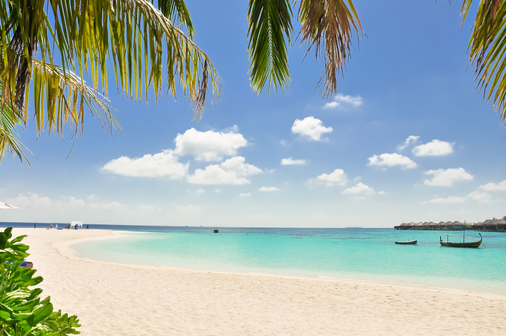
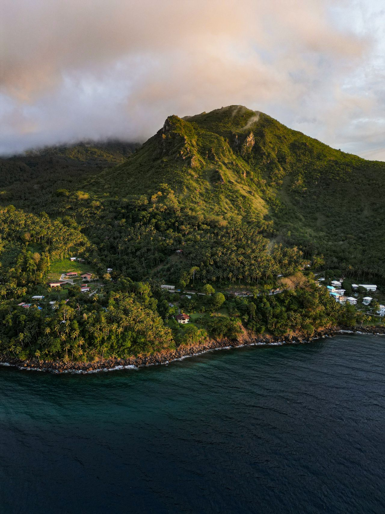

Mission
To promote responsible and sustainable tourism that supports local communities, preserves natural resources and cultural heritage, and provides memorable experiences for every visitor to Puerto Galera.

WELCOME TO PUERTO GALERA
Scan Smart, Discover Galera.
Discover world-class diving, crystal-clear beaches, waterfalls, island adventures, local culture, and unforgettable experiences in the heart of Oriental Mindoro.
Contact Tourism OfficePhilippines' No. 1 Dive Destination for 2025–2027
Source: Experience Puerto Galera

Oriental Mindoro, PhilippinesYOUR DIGITAL ISLAND GUIDE
MinSUcanNGo Galera helps you discover attractions, understand each destination, plan your journey, and access travel information through destination QR codes.
Photo: Pexels. Original link in Credits & Sources.
Puerto Galera sits on the Y-shaped peninsula on the northern shores of Mindoro Island, Oriental Mindoro. It is approximately 130 km south of Manila, 14 nautical miles from Batangas City, and around 50 km from Calapan City. Its name, "Port of the Galley," reflects its historic role as a natural harbor.
Founded as the original capital of Mindoro in 1574, Puerto Galera was officially established as a municipality on December 7, 1927, through Act 3415. In 1973, it was recognized under UNESCO's Man and Biosphere Program through Presidential Decree 354, acknowledging its outstanding natural value.
Puerto Galera is recognized as the Philippines' No. 1 Dive Destination for 2025–2027. Located along the Verde Island Passage — the "Center of the Center of Marine Shorefish Biodiversity" — it offers world-class diving, pristine beaches, lush forests, waterfalls, and rich cultural heritage.
To promote responsible and sustainable tourism that supports local communities, preserves natural resources and cultural heritage, and provides memorable experiences for every visitor to Puerto Galera.
A globally recognized eco-tourism destination where biodiversity thrives, local culture is celebrated, and visitors experience the best of the Philippines' natural wonders.
Puerto Galera is home to the Iraya Mangyan, an indigenous community whose traditions, weaving, and way of life form an integral part of the municipality's cultural heritage. Visitors are encouraged to engage respectfully with Mangyan communities and support their cultural preservation efforts.
THE ISLAND IS YOURS TO DISCOVER
Choose the side of Puerto Galera you want to explore.
Discover beaches, dive sites, nature, culture, leisure, and educational tourism in Puerto Galera.
No destinations found.
FIND YOUR REASON TO VISIT
Step-by-step guide from Manila to Puerto Galera, based on Experience Puerto Galera.
From Buendia/Pasay or Cubao, take JAM Liner, DLTB, or JAC Liner to Batangas Port. Estimated fare: ₱200–₱320. Travel time: approximately 2–3.5 hours.
Board a ferry from Batangas Pier via Island Water, Montenegro Lines, or Galerian. Estimated one-way fare: ₱600–₱900. Travel time: approximately 1–2 hours.
Pay ₱90 terminal fee per passenger. Seniors, PWDs, and students are exempt with valid Philippine ID, as stated by the source.
Register for the PG Pass and pay the mandatory ₱120 environmental fee at Balatero Port. Minors, students, seniors, and PWDs receive a 20% discount with valid ID, as stated by the source.
Take an authorized tricycle or blue-and-white electric tuk-tuk. Estimated charter fare: ₱200–₱300 to White Beach or Sabang. Travel time: approximately 10–20 minutes.
Municipality coverage, for general context only: approximately 13°23′–13°32′ N and 120°50′–121°00′ E. These bounds do not identify an exact destination pin.
Open Puerto Galera in Google MapsSelect a destination or open a guide.
Location: Puerto Galera, Oriental Mindoro
Google Maps opens a search result, not a verified exact destination pin.
Optional · One-time location
Your live location is requested only after you tap the button and approve browser permission. It is not stored by MinSUcanNGo Galera.
Visual highlights of Puerto Galera's beaches, diving, nature, culture, and travel journey.
YOUR DIGITAL DESTINATION PASS
Scan a destination QR code or enter its code to instantly open a travel guide.
Camera scanning is not available in this environment. Use the input or buttons below.
No destination found for that code.
Or select a sample destination:
Photo: Pexels. Prices, duration, schedules, availability: contact the Tourism Office for current information.
Puerto Galera, Oriental Mindoro, Philippines 5203
puertogalera2025@gmail.com / pgtourismoffice@gmail.com
Facebook: @experiencepuertogalera
Specific emergency numbers were not listed on the source website. For urgent concerns, verify local emergency contacts and contact the Puerto Galera Tourism Office using the numbers above: 0961-681-5244 or 0920-988-9551.
Photo, information, and reference acknowledgments for content featured on this website.
We acknowledge the photographers, creators, organizations, government agencies, tourism offices, publications, websites, and other sources whose materials and information contributed to this tourism platform. Credits are provided below to help visitors identify and access the original published sources.
No matching credits or sources found.